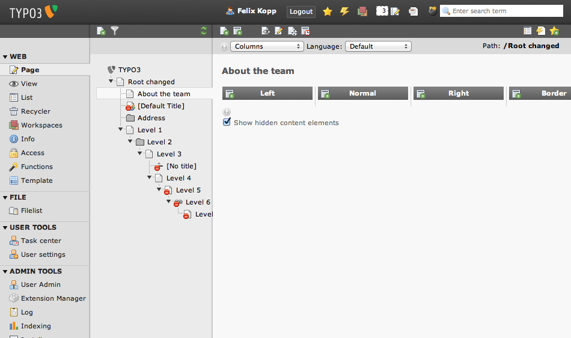
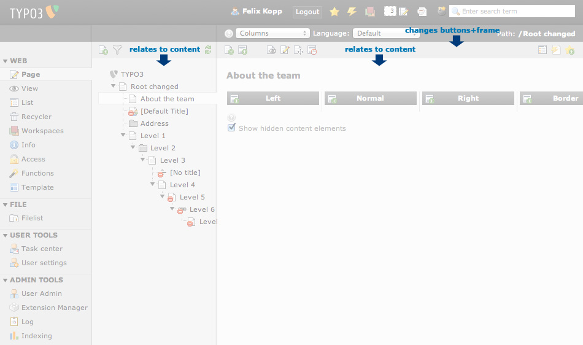
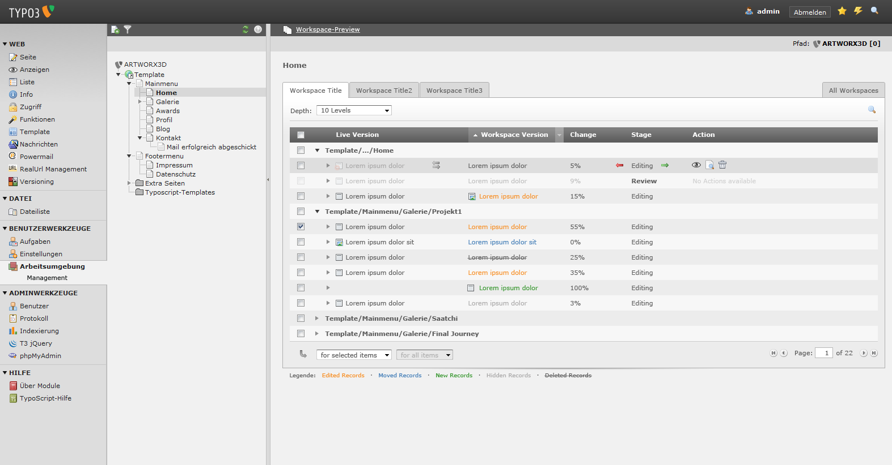

Suggestion #33508
Switch function bar and service bar
| Status: | Closed | Start date: | 2012-01-28 | |
|---|---|---|---|---|
| Priority: | Could have | Due date: | ||
| Assigned To: | - | % Done: | 0% |
|
| Category: | Usability | |||
| Target version: | TYPO3 6.0 | |||
| Tags: |
Description
Please participate in this discussion.
It might be a smart move to exchange the function menu containing drop-downs and the service bar containing buttons.
Definitions¶
The service bar contains buttons like save/new/edit/clear this page cache or view page. These buttons are very tightly connected to the displayed content in the large work are on the very right.
The function bar contains the function menu, language switch and/or general buttons. The function menu sets the overall functionality to work with in the working area.
The function menu can be considered a sub-navigation underneath the modul menu.
Example¶
Modul template has the functions 'Template Analyzer' or 'Constant Editor'. These functions present totally different tools.
Same goes for module Info with the functions 'Indexed Search Statistics' and 'Page Tree Overview'.
On selection of a module the function menus are updated.
On selection of a function the work area and corresponding service bar is updates.
The hierarchy might be defined like¶
1. Modul
2. Function
3. Working area with service bar (to save changes or add new content).
A strong linkage between the service bar and the worked on content can be described.
But this strong connection is not represented in the layout at current state.
Current state¶
Service bar: dark background and vertical top location.
Function bar: light background and vertically aligned below the service bar, directly at the working area.

Proposal:¶
Change the order of the content of function menu and service bar.
But do not change the layout.
Visual explaination

{kind=link}
{kind=link}
{kind=link}
Related issues
History
#1 Updated by Jens Hoffmann over 3 years ago
- Category set to Usability
- Status changed from New to Needs Feedback
Thanks for you Input! :)
Seems to work well for the Right section.
But I wouldn't work at all for the Tree section.
There a 2nd level opens up - but in your
suggestion is no space for 2nd level, right? :)
Our vision was to move the Sub-Modules to
the Side-Navigation .. but code-wise this is
not possible (feedback by the core team).
I like to discuss this topic further, but we
need more radical solutions, so do think.
Just switching the 2 Areas, is a good start
but not enough to really make difference.
Greez Jens
#2 Updated by Felix Kopp over 3 years ago
Hey Jens, in treelevel frame the filter dropdown could open on top of tree similar to the topbar.
Are there any sketches / mockups online to see how Module / Submodule might look?
I guess that could be possible. This solution could be done for all core modules.
What were you thinking about?
I would like to work on the function menus / submodules and optimize the workflow.
#3 Updated by Jens Hoffmann over 3 years ago
We tried that for the Workspace Team.
They sad: This isn't possible, technical.
Sadly, it would help a lot to simplify TYPO3.
See here: #9472
Greez Jens

#4 Updated by Gerrit Code Review about 3 years ago
Patch set 1 for branch master has been pushed to the review server.
It is available at http://review.typo3.org/12788
#5 Updated by Gerrit Code Review about 3 years ago
Patch set 2 for branch master has been pushed to the review server.
It is available at http://review.typo3.org/12788
#6 Updated by Gerrit Code Review about 3 years ago
Patch set 3 for branch master has been pushed to the review server.
It is available at http://review.typo3.org/12788
#7 Updated by Felix Kopp about 3 years ago
He Jens, found and realized a simple solution that
(a) brings a slightly changed html/css structure for core-modules to natively display function/buttons menu the "new" way
and also
(b) implements a legacy fall-back which displays the docheader the "new" way for old modules that do not implement the new html structure yet.
This way the module bars are swapped in all modules now and also allows an easy migration path.
I will send a path for the workspace team shortly.
#8 Updated by Gerrit Code Review about 3 years ago
Patch set 4 for branch master has been pushed to the review server.
It is available at http://review.typo3.org/12788
#9 Updated by Jens Hoffmann about 3 years ago
Could I test this somewhere?
#10 Updated by Gerrit Code Review about 3 years ago
Patch set 5 for branch master has been pushed to the review server.
It is available at http://review.typo3.org/12788
#11 Updated by Gerrit Code Review about 3 years ago
Patch set 6 for branch master has been pushed to the review server.
It is available at http://review.typo3.org/12788
#12 Updated by Gerrit Code Review about 3 years ago
Patch set 7 for branch master has been pushed to the review server.
It is available at http://review.typo3.org/12788
#13 Updated by Gerrit Code Review about 3 years ago
Patch set 8 for branch master has been pushed to the review server.
It is available at http://review.typo3.org/12788
#14 Updated by Gerrit Code Review about 3 years ago
Patch set 9 for branch master has been pushed to the review server.
It is available at http://review.typo3.org/12788
#15 Updated by Jens Hoffmann about 3 years ago
- Status changed from Needs Feedback to Resolved
- Target version set to TYPO3 6.0
Switching the DocHeader order ist good - and is accepted.
Having the DocHeader in the Left Main Menu - is not accepted.
Good work guys! :)
Greez Jens
#16 Updated by Jens Hoffmann about 3 years ago
- Status changed from Resolved to Closed
#17 Updated by Gerrit Code Review about 3 years ago
Patch set 10 for branch master has been pushed to the review server.
It is available at http://review.typo3.org/12788